Basal Ganglia (Detailed Circuits)
Introduction to Basal Ganglia Circuits
You have just read about the different motor-related cortical areas. Premotor areas are involved in planning, while MI is involved in execution. What you don't know is that the cortical areas involved in movement control need "help" from other brain circuits in order to smoothly orchestrate motor behaviors. One of these circuits involves a group of structures deep in the brain called the basal ganglia. While their exact motor function is still debated, the basal ganglia clearly regulate movement. Without information from the basal ganglia, the cortex is unable to properly direct motor control, and the deficits seen in Parkinson’s and Huntington's disease and related movement disorders become apparent.
Basal Ganglia Anatomy
Let's start with the anatomy of the basal ganglia. The important "players" are identified in the adjacent figure. The caudate and putamen have similar functions, and we will consider them as one in this discussion. Together the caudate and putamen are called the neostriatum or simply striatum. All input to the basal ganglia circuit comes via the striatum. This input comes mainly from motor cortical areas.
Notice that the caudate (L. tail) appears twice in many frontal brain sections. This is because the caudate curves around with the lateral ventricle. The head of the caudate is most anterior. It gives rise to a body whose "tail" extends with the ventricle into the temporal lobe (the "ball" at the end of the tail is the amygdala, whose limbic functions you will learn about later).
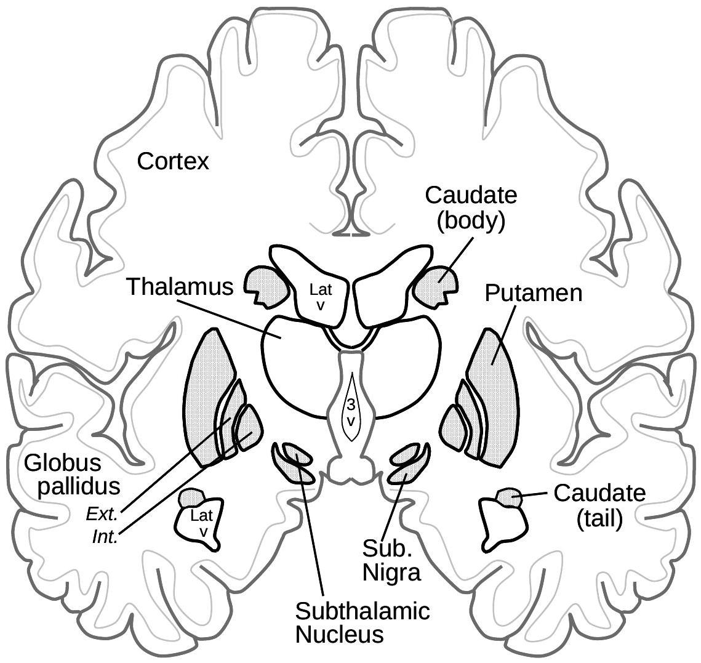 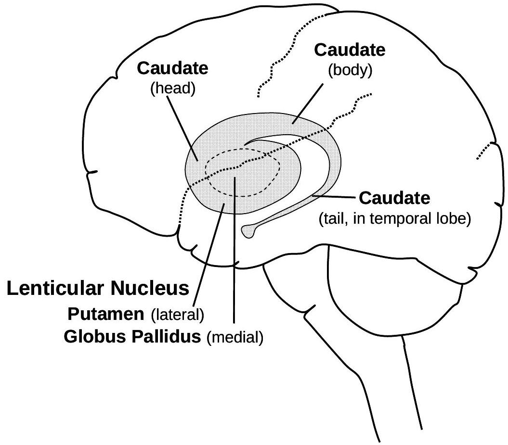Medial to the putamen is the globus pallidus (GP). Anatomically, the putamen and globus pallidus are shaped like a lens. For this reason, they are referred to as the lenticular nucleus. This term is still in use, even though the functions of the putamen and globus pallidus are different. The globus pallidus has two parts, a lateral, external (or outer) segment and a medial, internal (or inner) segment. Let's call them GP(external) and GP(internal).
GP(internal) contains the output neurons of the basal ganglia circuit. They project to ipsilateral motor thalamus, VA and VL. We'll discuss the connections of GP(external) later.
One of the pathways that conveys information from GP(internal) to motor thalamus is the ansa lenticularis. The "ansa" is evident in level 16 as a thick fiber bundle, associated with the globus pallidus, that loops under (ventral) the posterior limb of the internal capsule (ansa = L. loop, handle). While not apparent in this section, the ansa lenticularis then heads dorsally to reach the ipsilateral motor thalamic nuclei (VA/VL).
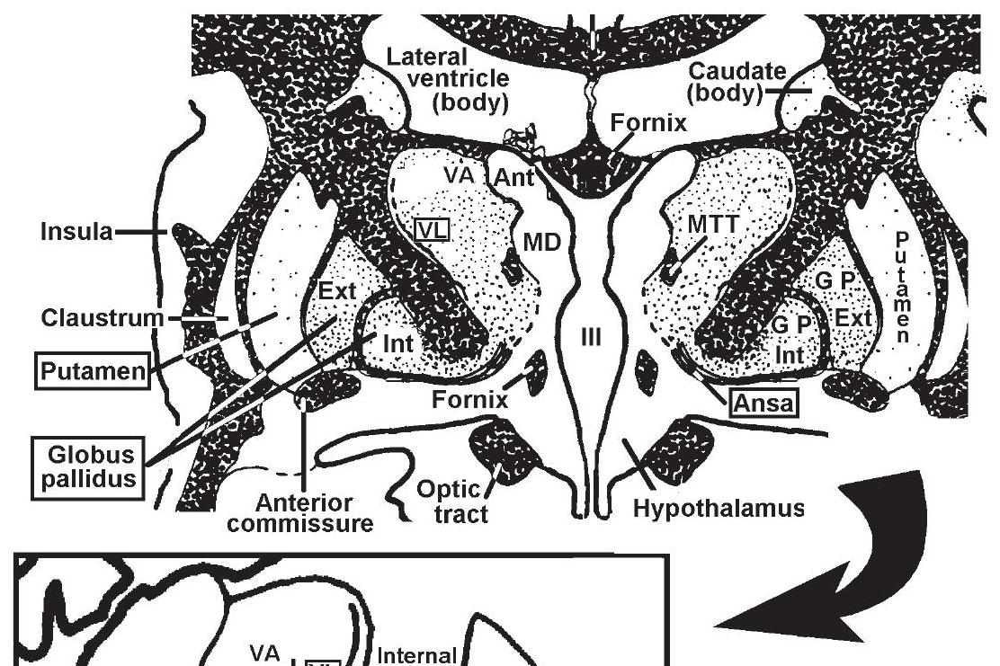LEVEL 16
In addition to the ansa lenticularis (often called the jug handle), information from the more caudal part of globus pallidus can also reach the VA/ VL via the lenticular fasciculus. Globus pallidus fibers in the lenticular fasiculus pass through (rather than under) the posterior limb of the internal capsule. The fibers then travel on top of the subthalamic nucleus (level 14) before looping dorsally and rostrally (level 15) towards VA/VL. While en route to the thalamus, the ansa and lenticular fasciculus fibers join other (e.g., cerebellothalamic) fibers that are also headed for VA/VL. This combined bundle is obvious in fiber stained sections and is called the thalamic fasciculus.
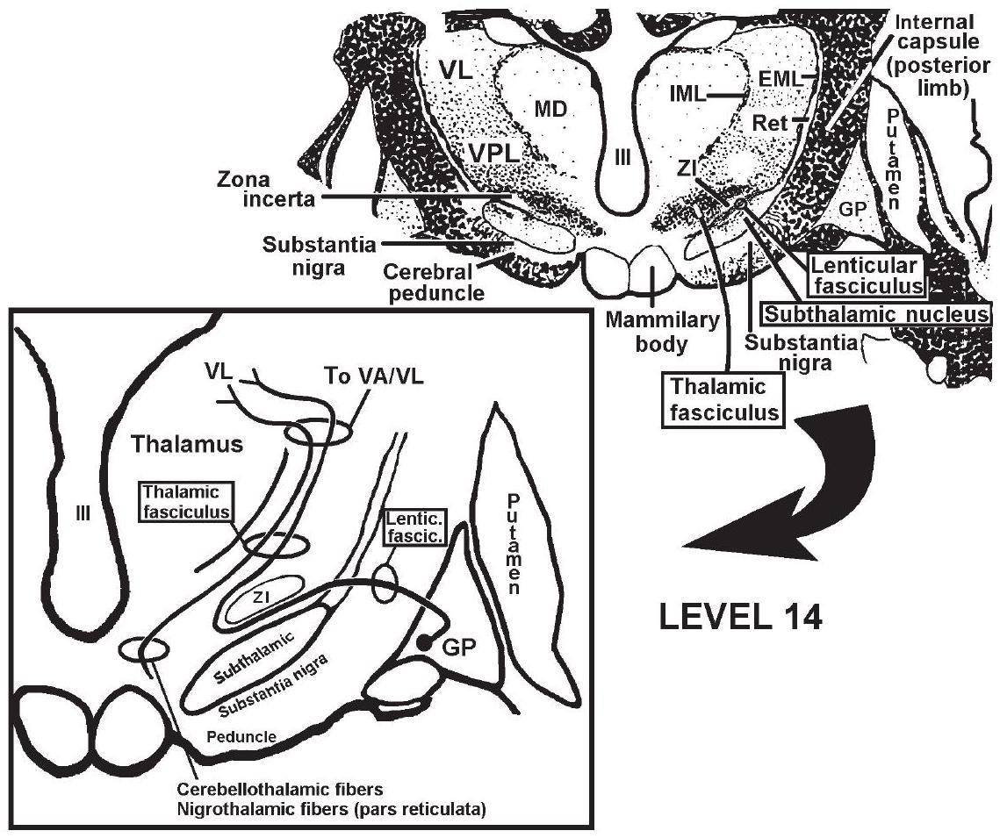All cortical areas involved in the planning and execution of movements project to the striatum (caudate and putamen). Striatal neurons receiving these cortical inputs then project to the globus pallidus, which in turn projects to the VA/VL. VA/VL in turn projects to motor cortex. So, the caudate, putamen and globus pallidus act on the motor thalamus, which acts on the motor cortex. There are no descending pathways that go from the basal ganglia directly to the spinal cord.
ALL OF THIS CIRCUITRY IS ON THE SAME SIDE OF THE BRAINUNCROSSED.
Thus, the basal ganglia affect function mediated by the ipsilateral motor cortex. Since motor cortex controls the movements of the contralateral body....
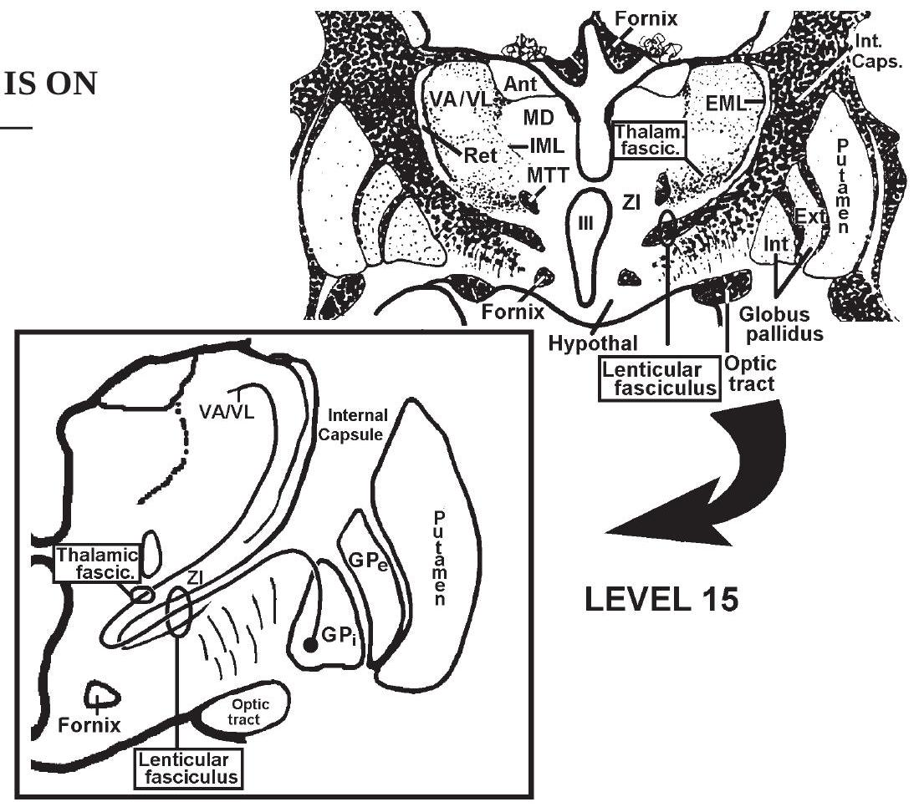Basal ganglia circuits affect movements of the contralateral body.
Direct and Indirect Pathways
So, what happens between striatum, which receives the inputs, and GP(internal), which provides the output? There are two important pathways through which striatal information reaches GP(internal) - the direct pathway and the indirect pathway. These two pathways have opposite effects on motor activity and help explain many clinical symptoms of basal ganglia diseases.
In the direct pathway, striatal cells project directly to GP(internal). That was easy. The consequence of this pathway is to increase the excitatory drive from thalamus to cortex. Let's see how this is accomplished. The cortical projections to the striatum use the excitatory transmitter glutamate. When they are activated, these cortical projections excite striatal neurons. This excitatory input is enough to turn on the striatal cell. This striatal cell uses the inhibitory transmitter GABA and its axon passes to, and inhibits, a cell in GP(internal). The cells in GP(internal) that project to VA/VL also use GABA. So, the cortical signal excites striatal neurons, which results in MORE inhibition from striatum to GP(internal). More inhibition of GP(internal) means LESS inhibition of motor thalamus (VA/VL). Since the motor thalamus receives LESS inhibition, the VA/VL cells will INCREASE their firing (VA/VL cells are not just receiving the inhibitory pallidal input, but have other excitatory inputs [one source you already know is cerebellar]). This decrease in inhibition is called dis-inhibition. Though not the same as direct excitation, it similarly leads to an increase in activity. So the end result of cortical excitatory input to striatal neurons at the head of the direct pathway is INCREASED FIRING OF VA/VL NEURONS AND IN TURN MOTOR CORTEX.
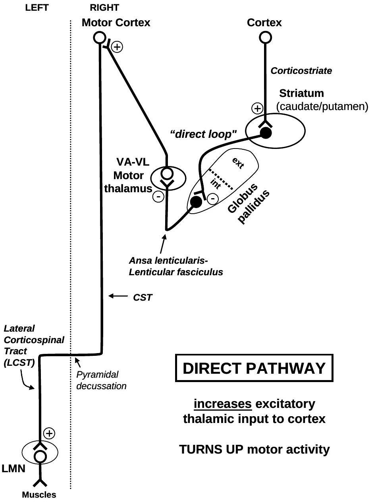The cellular components just described comprise the DIRECT PATHWAY. Think about this pathway as turning the motor system UP. That is, cells in VA/VL and the motor cortex INCREASE their firing. This results in increased activity in the corticospinal tract and eventually the muscles.
REMEMBER, THE DIRECT PATHWAY TURNS UP MOTOR ACTIVITY.
Now let's turn to the Indirect Pathway. Instead of projecting to GP(internal), the striatal neurons of the indirect pathway project to GP(external). Now we need to add another nucleus. This is the subthalamic nucleus. This nucleus lies just above the rostral portion of the substantia nigra (levels 13, 14). Cells in GP(external) project to the subthalamic nucleus. Cells in the subthalamic nucleus then project to GP(internal), which in turn projects to VA/VL. So, the indirect pathway is striatum to GP(external) to subthalamic nucleus to GP(internal) to VA/VL to motor cortex.
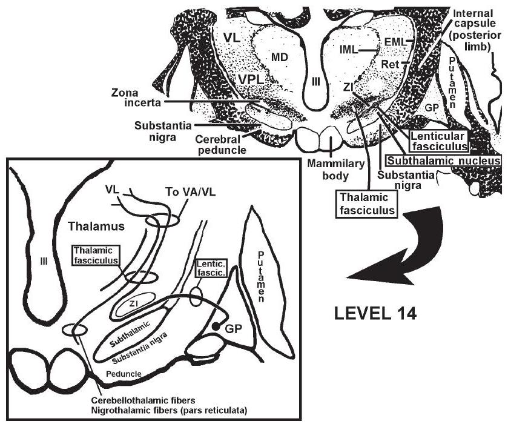A key thing to remember is that the projection neurons in cortex, subthalamic nucleus and VA/VL thalamus use glutamate; their effects are excitatory. The projection neurons in striatum and both segments of globus pallidus use GABA; their effects are inhibitory. So, applying the pluses (excitation) and minuses (inhibition) in the indirect pathway reveals that the consequence of the indirect pathway is to decrease the excitatory drive from thalamus to cortex. Let's take a more detailed look at the circuitry and see how this is accomplished.
In the indirect pathway, cortical fibers excite striatal neurons that project to GP(external). The increased activity of the GABAergic striatal neurons decreases activity in GP(external). The GABAergic cells in GP(external) inhibit cells in the subthalamic nucleus, so the decrease in activity in GP(external) results in less inhibition of cells in the subthalamic nucleus. That is, subthalmic neurons are dis-inhibited and increase their activity. The "return" projection from the subthalamic nucleus to GP(internal) is excitatory, so the increased activity in the subthalamic nucleus results in more excitation to cells in GP(internal). Thus, the end result of actions of the indirect loop is an increase in activity of the GABAergic cells in GP(internal) that project to VA/VL or an INCREASE in INHIBITION of the thalamic neurons.
The Indirect Pathway turns DOWN the motor thalamus and, in turn, motor cortex. Thus, it TURNS DOWN motor activity.
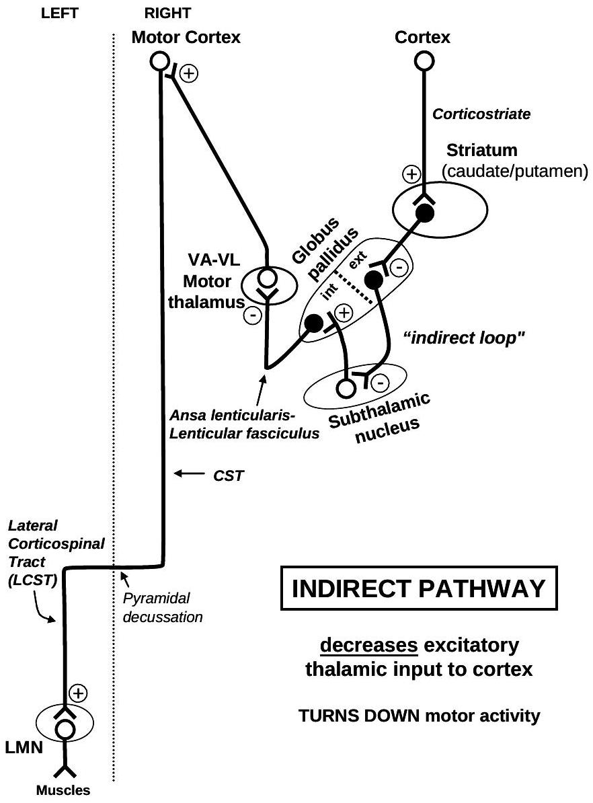DIRECT PATHWAY TURNS UP MOTOR ACTIVITY
INDIRECT PATHWAY TURNS DOWN MOTOR ACTIVITY
DOPAMINERGIC and CHOLINERGIC Modulation of Direct and Indirect Pathways
Now comes the good stuff. Striatal neurons are modulated by two important neuromodulatory systems. Each of these systems differentially affects the direct and indirect pathways, thereby altering their balance and the amount of motor activity that is produced.
First, let's add the substantia nigra to the system. As you now know from the brain stem lectures, DOPAMINE is produced by cells in the pars compacta of the substantia nigra (SNc). Nigrostriatal axon terminals release dopamine into the striatum. Dopamine has an EXCITATORY effect upon cells in the striatum that are part of the Direct Pathway. This is via D1 receptors. Dopamine has an INHIBITORY effect upon striatal cells associated with the Indirect Pathway. This is via D2 receptors. In other words, the direct pathway (which turns up motor activity) is excited by dopamine while the indirect pathway (which turns down motor activity) is inhibited. Both of these effects lead to increased motor activity.
DOPAMINE EXCITES THE DIRECT AND INHIBITS THE INDIRECT PATHWAY
THE EFFECT OF THE DOPAMINERGIC NIGROSTRIATAL PROJECTION IS TO INCREASE MOTOR ACTIVITY
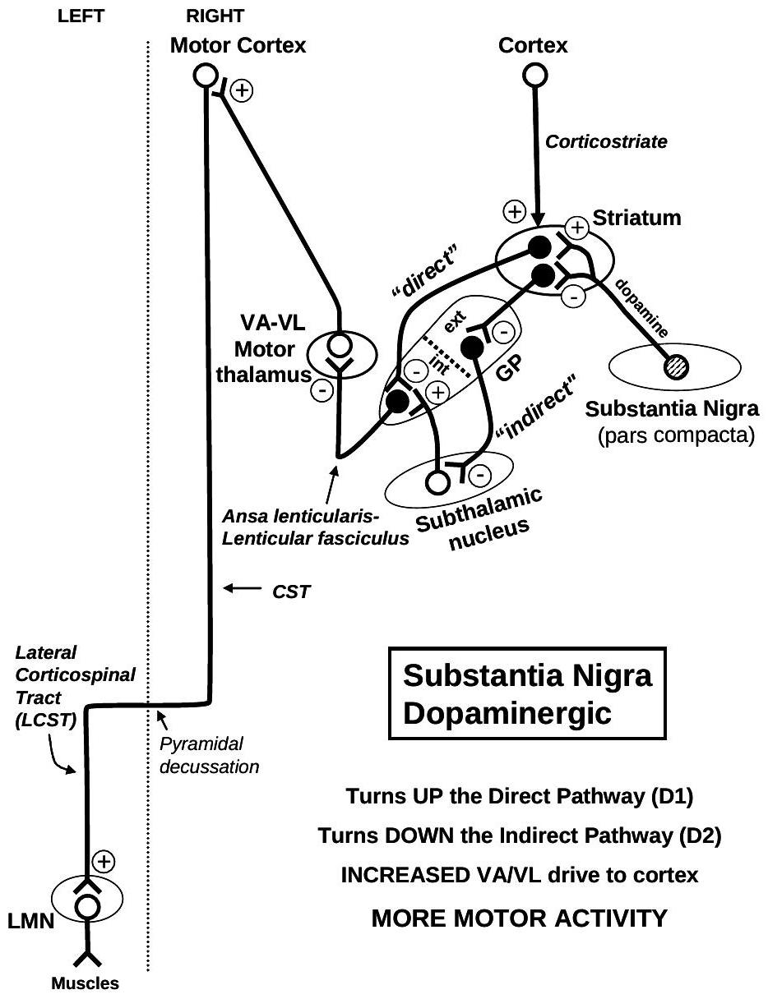Now we need to add one last set of cells to the circuitry of the basal ganglia. There is a population of cholinergic (ACh) neurons in the striatum whose axons do not leave the striatum (called interneurons or local circuit neurons). These cholinergic interneurons synapse on the GABAergic striatal neurons that project to GP(internal) AND on the striatal neurons that project to GP(external). The cholinergic actions INHIBIT striatal cells of the Direct pathway and EXCITE striatal cells of the Indirect pathway. Thus the effects of ACh are OPPOSITE the effects of dopamine on the direct and indirect pathways so the ACh effects on motor activity are opposite those of dopamine.
ACh INHIBITS THE DIRECT AND EXCITES THE INDIRECT PATHWAY
THE EFFECT OF THE CHOLINERGIC STRIATAL INTERNEURONS IS TO DECREASE MOTOR ACTIVITY
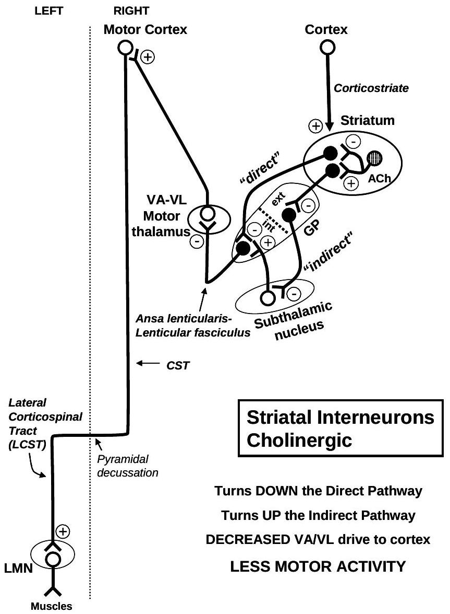ACh TURNS DOWN MOTOR ACTIVITY ACh inhibits striatal cells in the direct loop ACh excites striatal cells in the indirect loop
DA TURNS UP MOTOR ACTIVITY
DA excites striatal cells in the direct loop via D1 receptors DA inhibits striatal cells in the indirect loop via D2 receptors
Disorders of the Basal Ganglia: Hypokinesia
Now that we know the major circuits in the basal ganglia, let's take a look at some basic disorders and why they occur. Damage to the basal ganglia causes two different classes of syndromes, one characterized by an increase in movement (hyperkinetic) and the other characterized by decreased movement (hypokinetic). The most well known hypokinetic syndrome is Parkinson's disease, and it generally affects the elderly population. While hypokinesia (reduced movement) is the hallmark of Parkinson’s disease, three other signs (rigidity, tremor and loss of postural reflexes) accompany this decrease in movement.
In Parkinson's disease, rigidity is present in all muscle groups, both flexor and extensor, so that the resistance to passive movement is intense and consistent through the entire range of motion, so-called lead-pipe rigidity. This is often accompanied by cogwheeling, which refers to jerky, ratchet-like movements of the joints. Unlike the spasticity linked to upper motor neuron lesions, there is no change in the tendon reflexes and all muscles are affected although there is a tendency for the patients to maintain a flexed posture in both arms and legs. The tremor of Parkinson's patients is a static or resting tremor, which refers to the involuntary 4-5 Hz movements when the limb is held at rest but disappears during a voluntary movement. This contrasts sharply with the intention tremor of cerebellar signs. The loss of postural reflexes results in balance problems, which can manifest as unstable, stooped, or slumped-over posture and a shuffling walk of small steps followed by the need for quicker steps to maintain balance. It is difficult to explain all these symptoms with the knowledge that we currently have, but we can certainly account for the hypokinesia.
As you know, dopaminergic neurons in substantia nigra pars compacta are lost in Parkinson's disease. The degenerating nigral dopaminergic cells accumulate deposits of protein called Lewy Bodies. This is a histological hallmark of the disease.
Let's consider a lesion in the SN pars compacta as it relates to the direct pathway. The SN lesion takes away the dopaminergic drive on the direct pathway. The direct pathway turns up motor activity, and dopamine is excitatory to striatal neurons at the head of the direct pathway. When you take away the dopamine, activity in the direct pathway goes down, and motor activity goes down. Also, compounding this reduction in dopamine facilitation, ACh interneurons are still inhibiting the striatal cells at the head of the direct pathway. So there is a double whammy on the direct pathway --- loss of the excitation from dopamine AND ongoing and now unopposed inhibitory ACh input. Again, the end result is MORE inhibition reaching the VA/VL. That is, the motor thalamus and cortex are less active!
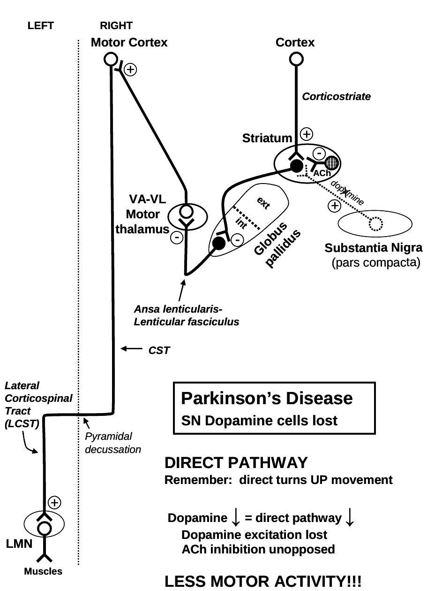Now let's walk through a lesion of the SNc as it relates to the Indirect Pathway. Dopamine normally inhibits the indirect pathway, and the indirect pathway turns down motor activity. Take away the dopamine inhibition and the indirect pathway increases its activity. The loss of dopaminergic inhibition to the indirect pathway is compounded by the now un-opposed excitatory actions of the cholinergic interneurons that drive the indirect pathway. Thus a SNc lesion increases activity in the indirect pathway, which turns DOWN motor activity.
The results of losing dopamine on both the Direct and Indirect Pathways is a reduction in the activity of VA/VL and, in turn, motor cortical neurons. This results in hypokinetic symptoms such as akinesia (no movement) or bradykinesia (slow movement). With Parkinson's disease, think of it this way; the turning up system (direct pathway) is less active, and the turning down system (indirect pathway) is more active. The result is turning down of motor activity or hypokinesia.
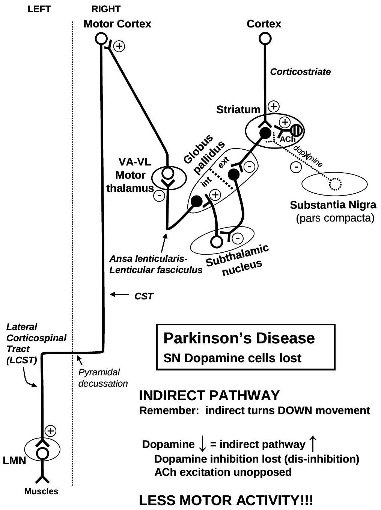Since the hypokinetic (Parkinson's) patients have decreased levels of dopamine in the striatum and substantia nigra pars compacta, they can be treated symptomatically with dopaminergic agonists, such as L-dopa. This is a precursor of dopamine that crosses the blood brain barrier. Parkinson's patients can also be treated with drugs that decrease the level of acetylcholine in the striatum. Remember, that ACh inhibits striatal cells that project into the Direct Pathway. If a cholinergic antagonist reduces this inhibition, then the "turning up" pathway can be more active. Also remember that ACh cells are excitatory on striatal cells projecting into the Indirect Pathway. If this excitation is blocked by anticholinergic drugs then the "turning down" pathway will not be as active.
HYPOKINETIC PROBLEMS (e.g., Parkinson's Disease) CAN BE HELPED BY: RAISING DOPAMINE LEVELS or LOWERING ACh LEVELS IN THE STRIATUM
There has been considerable interest generated by the discovery that a "synthetic heroin" drug of abuse contains a substance (MPTP or N-methyl, 4-phenyl, 1,2,5,6-tetrahydropyridine) that causes neurological symptoms virtually indistinguishable from Parkinson's disease. Perhaps the natural disease is caused by chronic exposure to environmental chemicals similar in structure to MPTP. MPTP itself seems to be harmless, but it is converted to a toxic derivative MPP+ by monoamine oxidase B enzymes in the brain. Studies indicate that monoamine oxidase B inhibitors may help slow the course of the disease. There has also been considerable interest in using transplants of dopaminergic cells into the striatum of patients suffering from Parkinson's disease as a means of alleviating its symptoms. Success in a very limited number of patients has been reported from implants from either the adrenal medulla or fetal dopamine-secreting cells.
It has also been demonstrated that some of the symptoms of Parkinson's disease can be reduced or alleviated by placing stimulating electrodes in the thalamus, subthalamic nucleus, or pallidum. The improvement gained from these electrical stimulating techniques depends on the location of the stimulation. Thalamic stimulators seem to be effective in reducing tremor, but do little for akinesia. Pallidal stimulation seems to have a more all-encompassing therapeutic effect. It is not immediately apparent from the neural circuits why electrical stimulation would actually improve the situation. One explanation of some effects may be that the high frequency stimulation may actually block or reduce neuronal firing for a short period of time. This is a very active area of research. While these stimulators, transplants and various drug therapies have come a long way in improving the lives of people with basal ganglia disorders, there is a great deal more to learn.
Disorders of the Basal Ganglia: Hyperkinesia
While the loss of dopamine from the substantia nigra results in hypokinetic symptoms seen in Parkinson's disease, hyperkinetic problems are caused by other pathologies of the basal ganglia. Two classic hyperkinetic disorders are hemiballism and Huntington's chorea. Hemiballism is characterized by wild, flinging movements of the body, and it results from lesion in the subthalamic nucleus. The excitatory input to GP(internal) is lost following such lesions. The result is LESS inhibition reaching the VA/VL (the subthalamic nucleus normally increases the inhibition in the pallidal-VA/VL projection). Thus, the VA/VL is turned up, as is motor cortex, and there is uncontrollable hyperactivity of the motor system.
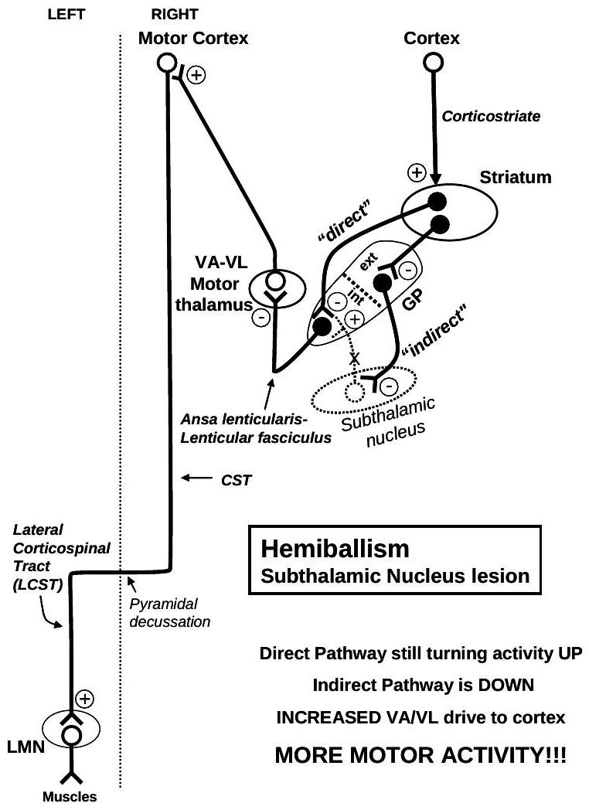Huntington's chorea is characterized by involuntary choreiform movements which show up as rapid, involuntary and purposeless jerks of irregular and variable location on the body. They are spontaneous and cannot be inhibited, controlled, or directed by the patient. Huntington's chorea is an inherited disease that usually shows up in the fourth decade. Disease onset is slow and hard to diagnose, but usually general irritableness and explosive behavior precede motor symptoms. Later, there is memory loss and attention deficit, followed by restless or fidgety hands. Finally, the disease progresses with facial movements and constant jerky movements of all parts of the body. Despite the continual movements, there may be hypotonia. The initial cause of these uncontrollable movements is the loss of GABAergic cells in the striatum that project only to GP(external), the head of the indirect pathway. This loss shows up on MRI as degeneration in the caudate nucleus. The loss of this inhibition on the head of the indirect pathway (which turns down motor activity) means that VA/VL is turned up, as is the motor cortex, and there is uncontrollable hyperactivity of the motor system. In addition to the loss of striatal GABAergic cells of the indirect pathway, the striatal cholinergic cells also begin to die. The loss of both types of cell causes less inhibition of VA/VL and increased motor output.
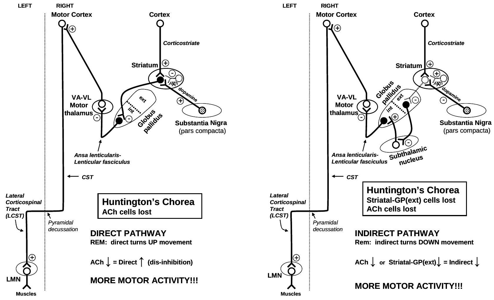How can these hyperkinetic problems be treated? Remember that the indirect pathway is turned down, and the direct pathway is dominating. The hyperkinesia can be reduced by bringing the contributions of the direct and indirect pathways more into balance. One approach is to replace the lost cholinergic input to the striatum. ACh turns DOWN motor activity by inhibiting the direct pathway. If there are any surviving striatal-GP(external) neurons, ACh would excite them and thus increase activity in the indirect pathway, also leading to a decrease in motor activity.
The same cholinergic agonists will help hemiballism. Again, there is hyperactivity of the motor thalamus because the pallidal inhibition upon the VA/VL is decreased due to the loss of the subthalamic nucleus. Think about what you could do to decrease activity in the direct pathway (which normally turns things up). You could slow the direct pathway down by increasing the amount of ACh reaching those striatal neurons that project into the direct pathway. This means there is less inhibition flowing out of the striatum to GP(internal), and more inhibition of VA/VL. The end result is less movement, i.e., reduction of the hyperkinesia. As an alternative, you could also decrease activity in the direct pathway by reducing its activation from dopamine with a dopaminergic antagonist.
HYPERKINETIC PROBLEMS (e.g., Huntington's Chorea) CAN BE HELPED BY: RAISING ACh LEVELS or LOWERING DOPAMINE LEVELS IN THE STRIATUM
Both treatments DECREASE activity in the Direct Pathway (the "turning up" system) and INCREASE activity in the Indirect Pathway (the "turning down" system)
Summary and Conclusion
In summary, the basal ganglia are clearly involved in motor function. They receive major input from motor cortex and act, via motor thalamus, on the motor cortex. Also, basal ganglia problems lead to motor deficits. What is less clear is the role of the basal ganglia under normal circumstances. One clue to basal ganglia function is that there are no descending projection to motor neurons in spinal cord or brainstem. Thus, the basal ganglia act on cortical neurons that orchestrate the motor commands.
A common thread of the many hypotheses about basal ganglia function builds on the "turn up - turn down" effects of the direct and indirect pathways. Any movement you make requires that certain motor commands (i.e., raise arm) be executed and opposing commands (i.e., lower arm) be suppressed. There is evidence that actions of the direct pathway promote the proper execution commands and the indirect pathway suppresses commands related to opposing movements.
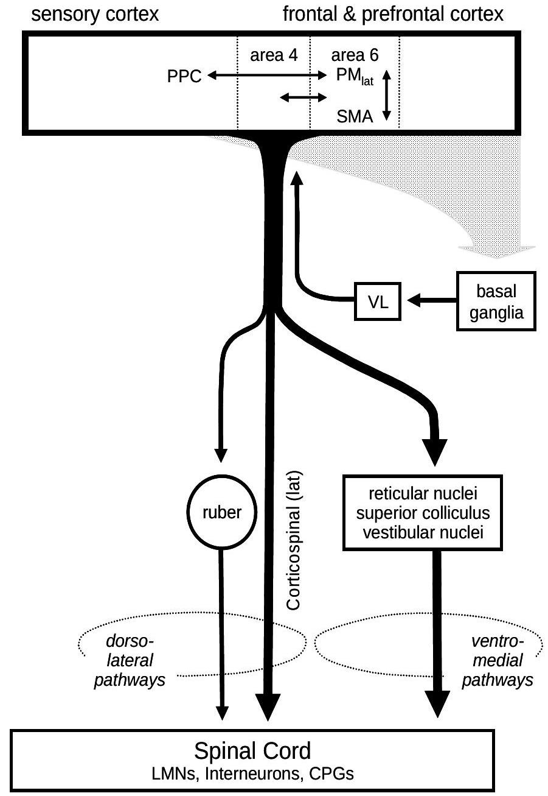Another hypothesis is that the basal ganglia are important for performing a sequence of movements smoothly, and the direct and indirect pathways may play a role in this. Performing a motor sequence requires that the movements be executed in the proper order. Thus, the direct pathway may "turn up" the appropriate movement commands when it is their turn while the indirect pathway may "turn down" the commands when it is not their turn.
The basal ganglia play a special role in motor function, and basal ganglia problems lead to particular motor deficits. These deficits differ from those associated with lower and upper motor neuron damage. As a review, let's look at the results of lesions involving different aspects of the motor system.
| Lower Motor Neuron | Upper Motor Neuron | Basal Ganglia |
|---|---|---|
| Paralysis | Paresis (weakness) | No paralysis |
| Muscle atrophy | No atrophy | No atrophy |
| Areflexia & atonia | Hyperreflexia, hypertonia, spasticity | Parkinson's: rigidity, resting tremor, bradykinesia Huntington's: chorea, hyperkinesia |
| Ipsi deficit in spinal cord | Contra deficit above decussation Ipsi deficit below decussation | Contra |
Also, while we have emphasized the motor function of the basal ganglia, I would like you to note that other behaviors are affected by similar but separate neural loops through the basal ganglia. These include an oculomotor loop that plays a role in eye movement control and limbic and prefrontal loops that appear involved in emotion and cognitive function. As our understanding of these other loops increases, we may be able to alter the course of particular diseases.
Finally, some National Board stuff. The term "basal ganglia" usually includes the caudate, putamen, globus pallidus, and amygdala. We use the term more loosely to refer to a group of nuclei that are anatomically interconnected and have important motor functions. These are the caudate, putamen, globus pallidus, substantia nigra, and subthalamic nuclei. The amygdala is technically part of the basal ganglia (due to its developmental origin), but functionally is part of the limbic system (emotions and visceral stuff!) so it will be discussed as part of that system later in the course. The striatum and the globus pallidus are collectively known as the corpus striatum. Finally because of their close proximity, the globus pallidus and putamen are often called the lenticular (lens shaped) nuclei, although the two structures are quite distinct anatomically and physiologically.
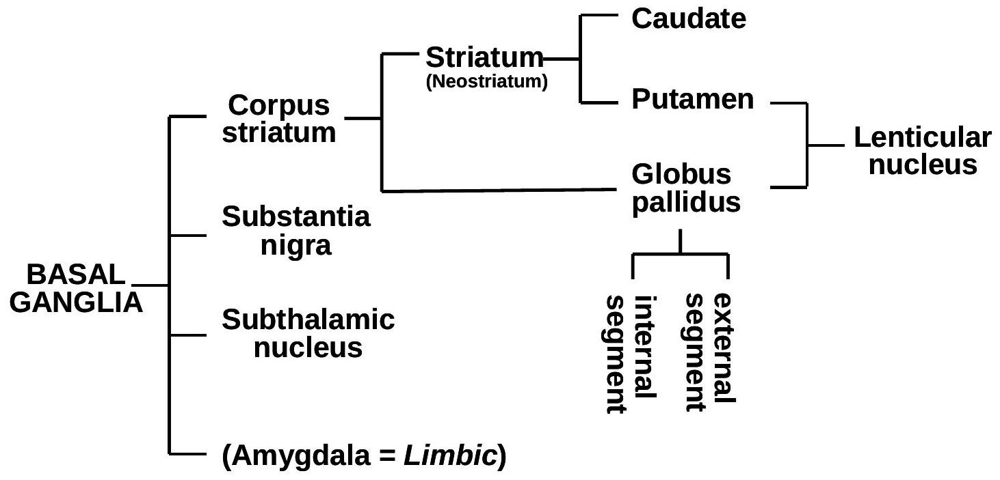